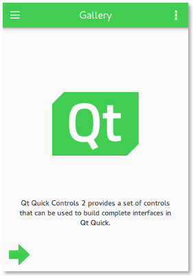

Best Practices for QML and Qt Quick
Despite all of the benefits that QML and Qt Quick offer, they can be challenging in certain situations. The following sections elaborate on some of the best practices that will help you get better results when developing applications.
Custom UI Controls
A fluid and modern UI is key for any application's success in today's world, and that's where QML makes so much sense for a designer or developer. Qt offers the most basic UI controls that are necessary to create a fluid and modern-looking UI. It is recommended to browse this list of UI controls before creating your own custom UI control.
Besides these basic UI controls offered by Qt Quick itself, a rich set of UI controls are also available with Qt Quick Controls. They cater to the most common use cases without any change, and offer a lot more possibilities with their customization options. In particular, Qt Quick Controls provides styling options that align with the latest UI design trends. If these UI controls do not satisfy your application's needs, only then it is recommended to create a custom control.
You can use the controls when you design UIs in Qt Design Studio. In addition, it provides timeline-based animations, visual effects, layouts, and a live-preview for prototyping applications.
Related Information
Coding Conventions
Bundle Application Resources
Most applications depend on resources such as images and icons to provide a rich user experience. It can often be a challenge to make these resources available to the application regardless of the target OS. Most popular OS-es employ stricter security policies that restrict access to the file system, making it harder to load these resources. As an alternative, Qt offers its own resource system that is built into the application binary, enabling access to the application's resources regardless of the target OS.
For example, consider the following project directory structure:
MyModule ├── images │ ├── image1.png │ └── image2.png ├── CMakeLists.txt └── main.qml
You may represent this structure as a CMake QML Module in the following way:
qt_add_qml_module(my_module
URI MyModule
VERSION 1.0
QML_FILES
main.qml
RESOURCES
images/image1.png
images/image2.png
# ...
)
All QML files listed under QML_FILES will automatically get compiled ahead of time.
You should keep the QML files in the same directory as the CMakeLists.txt with the qt_add_qml_module. Otherwise their implicit imports will be different from the QML Modules they belong to. This is a frequent source of mistakes.
Related Information
Separate UI from Business Logic
One of the key goals that most application developers want to achieve is to create a maintainable application. One of the ways to achieve this goal is to separate the user interface from the business logic. The following are a few reasons why an application's UI should be written in QML:
- Declarative languages are strongly suited for defining UIs.
- QML code is simpler to write, as it is less verbose than C++, and is not strongly typed. This also results in it being an excellent language to prototype in, a quality that is vital when collaborating with designers, for example.
- JavaScript can easily be used in QML to respond to events.
Being a strongly typed language, C++ is best suited for an application's business logic. Typically, such code performs tasks such as complex calculations or data processing, which are faster in C++ than QML.
Qt offers various approaches to integrate QML and C++ code in an application. A typical use case is displaying a list of data in a user interface. If the data set is static, simple, and/or small, a model written in QML can be sufficient.
The following snippet demonstrates examples of models written in QML:
model: [ "Item 1", "Item 2", "Item 3" ] model: 10
Use C++ for dynamic data sets that are large or frequently modified.
Exposing Data from C++ to QML
Refactoring QML is a lot easier than refactoring C++, so in order to make maintenance pain-free, we should strive to keep C++ types unaware of QML as much as possible. This can be achieved by "pushing" references to C++ types into QML.
This can be done by using required properties and setting them via QQmlApplicationEngine::setInitialProperties. It is also possible to create one or multiple singletons which will return all the data the C++ side wants to provide to QML.
With this approach, the C++ remains unchanged in the event that the QML needs to be refactored in the future.
For a quick guide to choosing the correct approach to expose C++ types to QML, see Choosing the Correct Integration Method Between C++ and QML.
Related Information
Using Qt Design Studio
Qt Design Studio uses UI files that have the filename extension .ui.qml to separate the visual parts of the UI from the UI logic you implement in .qml files. You should edit UI files only in the 2D view in Qt Design Studio. If you use some other tool to add code that Qt Design Studio does not support, it displays error messages. Fix the errors to enable visual editing of the UI files again. Typically, you should move the unsupported code to a .qml file.
Related Information
Using Qt Quick Layouts
Qt offers Qt Quick Layouts to arrange Qt Quick items visually in a layout. Unlike its alternative, the item positioners, the Qt Quick Layouts can also resize its children on window resize. Although Qt Quick Layouts are often the desired choice for most use cases, the following dos and don'ts must be considered while using them:
Dos
- Use anchors or the width and height properties to specify the size of the layout against its non-layout parent item.
- Use the Layout attached property to set the size and alignment attributes of the layout's immediate children.
Don'ts
- Do not define preferred sizes for items that provide implicitWidth and implicitHeight, unless their implicit sizes are not satisfactory.
- Do not use anchors on an item that is an immediate child of a layout. Instead, use
Layout.preferredWidthandLayout.preferredHeight:RowLayout { id: layout anchors.fill: parent spacing: 6 Rectangle { color: 'orange' Layout.fillWidth: true Layout.minimumWidth: 50 Layout.preferredWidth: 100 Layout.maximumWidth: 300 Layout.minimumHeight: 150 Text { anchors.centerIn: parent text: parent.width + 'x' + parent.height } } Rectangle { color: 'plum' Layout.fillWidth: true Layout.minimumWidth: 100 Layout.preferredWidth: 200 Layout.preferredHeight: 100 Text { anchors.centerIn: parent text: parent.width + 'x' + parent.height } } }
Note: Layouts and anchors are both types of objects that take more memory and instantiation time. Avoid using them (especially in list and table delegates, and styles for controls) when simple bindings to x, y, width, and height properties are enough.
Related Information
Type Safety
When declaring properties in QML, it's easy and convenient to use the "var" type:
property var name property var size property var optionsMenu
However, this approach has several disadvantages:
- If a value with the wrong type is assigned, the error reported will point to the location of the property declaration, as opposed to the location where the property was assigned to. This slows down the development process by making it more difficult to track down errors.
- Static anaylsis to catch errors like the ones mentioned above is not possible.
- The actual underlying type of the property is not always immediately clear to the reader.
Instead, always use the actual type where possible:
property string name
property int size
property MyMenu optionsMenu
Performance
For information on performance in QML and Qt Quick, see QML Performance Considerations And Suggestions.
Prefer Declarative Bindings Over Imperative Assignments
In QML, it's possible to use imperative JavaScript code to perform tasks such as responding to input events, send data over a network, and so on. Imperative code has an important place in QML, but it's also important to be aware of when not to use it.
For example, consider the following imperative assignment:
Rectangle {
Component.onCompleted: color = "red"
}
This has the following disadvantages:
- It's slow. The color property will first be evaluated with a default-constructed value, and then again with "red" later on.
- It delays errors that could be found at build time to run time, slowing down the development process.
- It overwrites any declarative binding that was in place. In most cases this is intended, but sometimes it can be unintentional. See Debugging overwriting of bindings for more information.
- It interferes with tooling; Qt Quick Designer, for example, doesn't support JavaScript.
The code can be rewritten to be a declarative binding instead:
Rectangle {
color: "red"
}
Tools and Utilities
For information on useful tools and utilies that make working with QML and Qt Quick easier, see Qt Quick Tools and Utilities.
Scene Graph
For information on Qt Quick's scene graph, see Qt Quick Scene Graph.
Scalable User Interfaces
As display resolutions improve, a scalable application UI becomes more and more important. One of the approaches to achieve this is to maintain several copies of the UI for different screen resolutions, and load the appropriate one depending on the available resolution. Although this works pretty well, it adds to the maintenance overhead.
Qt offers a better solution to this problem and recommends the application developers to follow these tips:
- Use anchors or the Qt Quick Layouts module to lay out the visual items.
- Do not specify explicit width and height for a visual item.
- Provide UI resources such as images and icons for each display resolution that your application supports. The Qt Quick Controls gallery example demonstrates this well by providing the
qt-logo.pngfor@2x,@3x, and@4xresolutions, enabling the application to cater to high resolution displays. Qt automatically chooses the appropriate image that is suitable for the given display, provided the high DPI scaling feature is explicitly enabled. - Use SVG images for small icons. While larger SVGs can be slow to render, small ones work well. Vector images avoid the need to provide several versions of an image, as is necessary with bitmap images.
- Use font-based icons, such as Font Awesome. These scale to any display resolution, and also allow colorization. The Qt Quick Controls Text Editor example demonstrates this well.
With this in place, your application's UI should scale depending on the display resolution on offer.
